Portfolio cartográfico
Nélida Pamela Díaz Colodrero
Grado en Historia (Universidad de Oviedo) · Máster en Recursos Territoriales y Estrategias de Ordenación (Universidad de Oviedo / Universidad de Cantabria)
Un caso de uso como ejemplo
2026
Un retrato cartográfico del concejo, Asturias
Este portafolio reúne el diagnóstico territorial que elaboré para Ribera de Arriba: dónde se sitúa, cómo es su relieve y su geología, cómo se reparte el uso del suelo y la población, y qué ha cambiado sobre el terreno entre 2018 y 2026 a partir de imágenes de satélite. Combiné fuentes oficiales — IGN, IGME, SIOSE, Catastro, MITECO, Copernicus/Sentinel-2 — con procesamiento geoespacial propio: álgebra de bandas sobre series temporales, cruces vectoriales reales entre capas y cálculo de accesibilidad sobre la red viaria oficial, no sobre distancia en línea recta. Cierro con tres escenarios de futuro, leídos como lo que son: proyecciones cualitativas, no predicciones numéricas.
Ribera de Arriba se encuentra en el centro de Asturias, lindando con Oviedo, Morcín y Santo Adriano, y forma parte de la comarca agraria de Oviedo. Ocupa unas 2.200 hectáreas en torno al centroide 43,3046 N / 5,8857 O. Su forma alargada sigue el curso del río, que atraviesa el concejo de oeste a este y concentra en su vega la mayor parte de los núcleos de población, empezando por la capital, Soto Ribera.
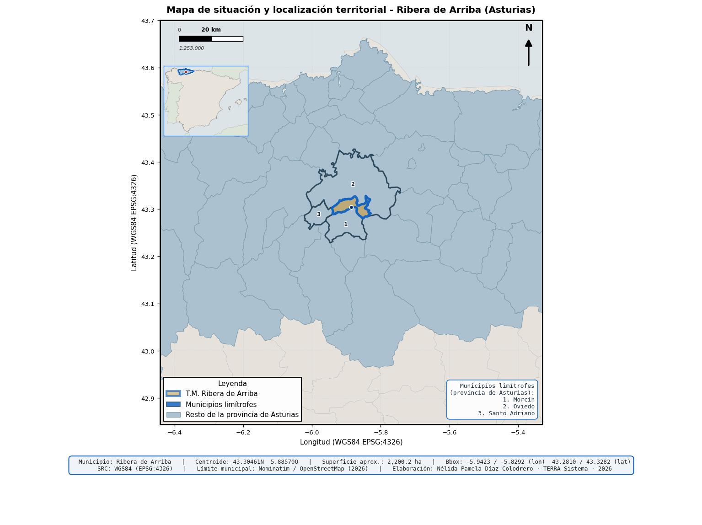
Situación de Ribera de Arriba dentro de Asturias, con sus tres municipios limítrofes.
Dentro de la comarca agraria de Oviedo, que agrupa un territorio mucho mayor en torno a la capital regional, Ribera de Arriba ocupa el extremo suroeste: una posición de borde, pegada a la comarca pero con dinámicas propias de concejo rural pequeño.
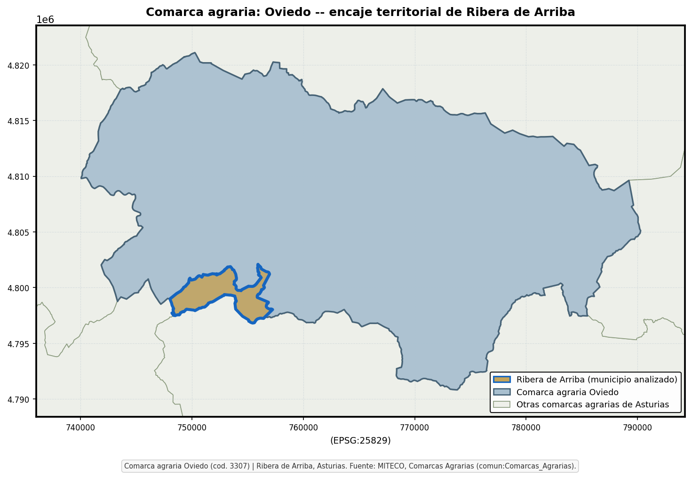
Encaje de Ribera de Arriba en la comarca agraria de Oviedo (cód. 3307).
Para leer el territorio en conjunto reuní en un mismo visor los límites municipales, las zonas de inundación oficiales (T10, T100, T500), el suelo urbano y los instrumentos de planeamiento vigentes, y toda la red de transporte. Es la capa base sobre la que se apoyan el resto de análisis de este portafolio.
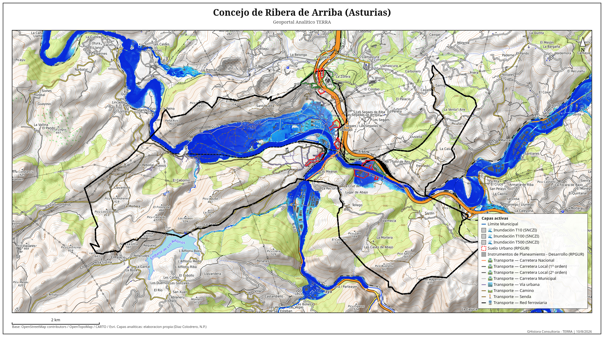
Límite municipal, inundabilidad SNCZI, suelo urbano y red de transporte sobre cartografía topográfica.
Este visor interactivo, generado automáticamente por TERRA SISTEMA, permite explorar el territorio capa por capa directamente desde el navegador, sin necesidad de instalar ningún software SIG. Con el control de capas de la esquina superior derecha puedes activar o desactivar de forma independiente el límite municipal, las zonas de inundación oficiales del SNCZI en sus tres periodos de retorno (T10, T100 y T500), el suelo urbano y urbanizable, los instrumentos de planeamiento vigentes, los elementos catalogados y bienes de interés cultural, y la red de transporte completa. Algunas capas, suelo urbano y urbanizable, planeamiento, elementos catalogados, bienes de interés cultural y usos del suelo, muestran además información detallada al pasar el ratón sobre cada elemento. Haz zoom y desplázate libremente por el mapa para explorar el territorio con el mismo nivel de detalle que se entrega en cada informe técnico.
La barra de herramientas de la izquierda añade funciones propias de un visor cartográfico profesional: zoom con los botones + y −, selección de un área concreta para consultarla en detalle, búsqueda de lugares y coordenadas, pantalla completa para una exploración más cómoda, y colocación de marcadores propios sobre el mapa. El icono de la cámara exporta directamente la vista actual como mapa listo para imprimir, en formato PNG o PDF, con escala gráfica, leyenda de capas activas y flecha de norte incluidas, sin necesidad de montarlo aparte en ningún programa de diseño. Todo el visor, capas y herramientas incluidas, se ciñe siempre al territorio objeto de estudio: en este caso, el concejo de Ribera de Arriba.
El concejo se organiza en torno a dos brazos de valle que se juntan en el centro, donde el terreno baja hasta poco más de 100 metros sobre el nivel del mar. A ambos lados, las laderas suben hasta cumbres que superan los 450-500 metros: un relieve de vega estrecha entre montañas, típico de la Asturias central.
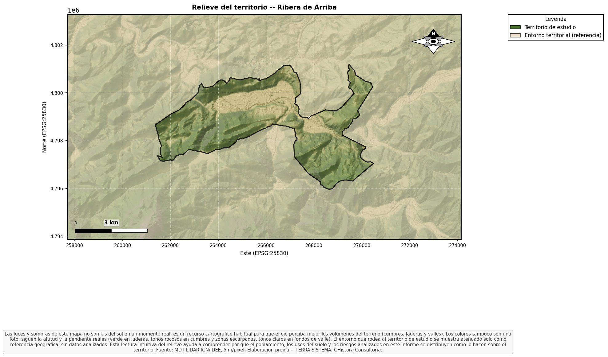
Relieve por altitud y pendiente, con el entorno territorial atenuado como referencia.
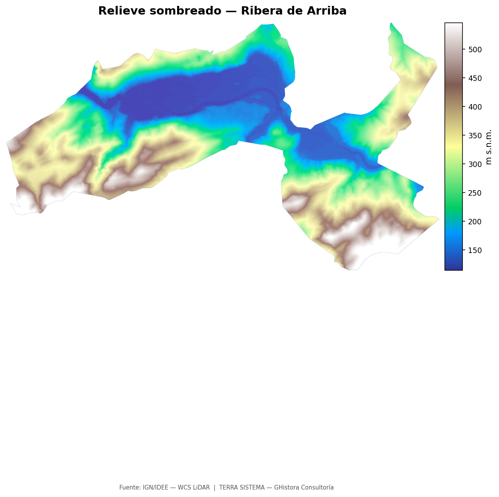
Relieve sombreado: el fondo de valle, en azul, apenas supera los 130 m; las cumbres del sur rondan los 500 m.
Las curvas de nivel muestran lo mismo con más detalle: cuanto más juntas están las líneas, más pronunciada es la ladera. Esa lectura ayuda a entender dónde es más fácil asentarse o cultivar, y dónde el terreno es más propenso a la erosión.
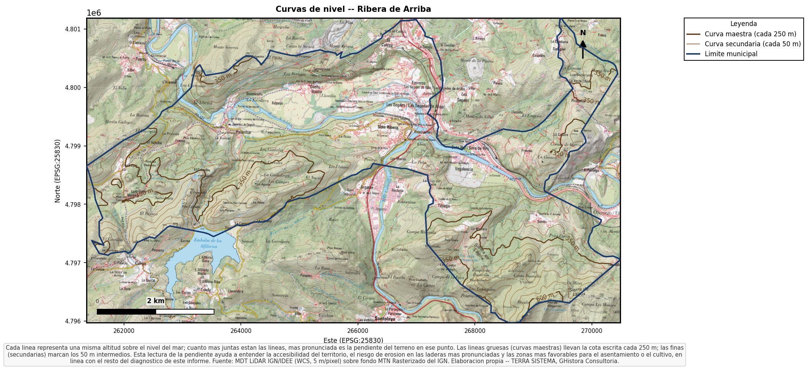
Curvas maestras cada 250 m y secundarias cada 50 m sobre el mapa topográfico del IGN.
Dos perfiles topográficos atraviesan el concejo en sus direcciones principales. El primero, de noroeste a sureste, sube desde la vega hasta un máximo de 435 m antes de volver a bajar. El segundo, de oeste a este, arranca ya alto —466 m— desciende a un collado de apenas 176 m en el centro, y vuelve a subir a 450 m hacia el este: el corte muestra bien esa alternancia de sierra, valle y sierra que define el paisaje del concejo.
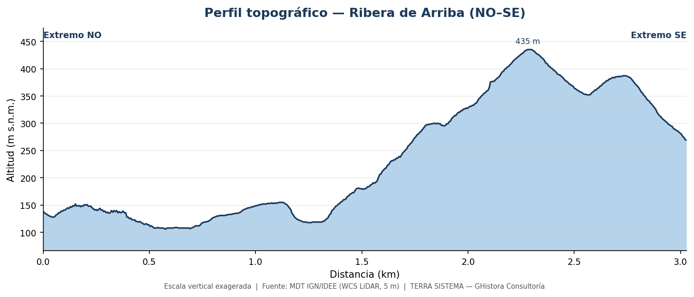
Perfil NO-SE, con un máximo de 435 m.
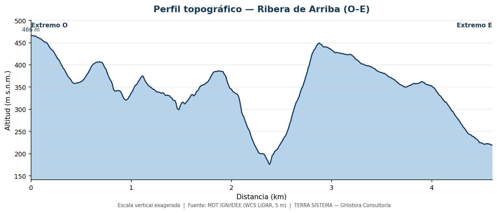
Perfil O-E, de 466 m en el extremo occidental a un collado de 176 m y una segunda cima de 450 m.
Además de estos mapas estáticos, TERRA SISTEMA genera un modelo tridimensional navegable del relieve del concejo, con textura topográfica real drapeada sobre el terreno. Por su peso (más de 100 MB, al incluir la textura completa a máxima resolución), no se puede incrustar directamente en esta página, pero puede descargarse y abrirse en cualquier navegador para explorarlo con zoom, rotación e inclinación libres.
📥 Descargar el modelo 3D del relieve de Ribera de Arriba
⚠️ Recomendaciones para abrir el modelo 3D: funciona mejor en Firefox de escritorio. En Chrome puede no cargar la escena por restricciones de seguridad del navegador con archivos locales grandes. En dispositivos móviles, el tamaño del archivo puede hacer que la carga sea lenta o no llegue a completarse.
Bajo ese relieve hay una geología plegada y fallada: calizas grises, pizarras y areniscas, cuarcitas y algún tramo de calizas y margas apizarradas, con fallas y pliegues que atraviesan el concejo de oeste a este. Sobre el mapa geológico oficial del IGME anoté también las medidas de buzamiento disponibles, el ángulo con el que se inclinan los estratos, útil para valorar la estabilidad de las laderas.
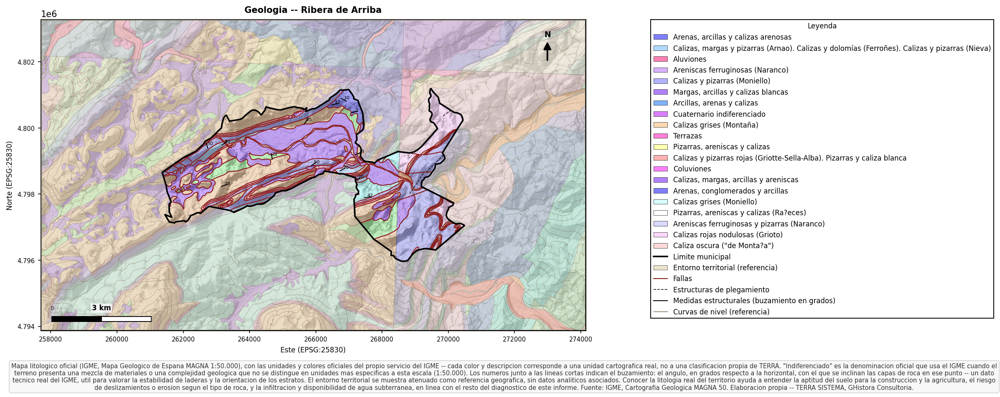
Litologías, fallas y estructuras de plegamiento (IGME, MAGNA 1:50.000).
La misma información, leída por edad geológica en vez de por litología, muestra franjas que van del Lochkoviense y el Wenlock —hace más de 400 millones de años— hasta el Holoceno reciente en el propio fondo de valle.
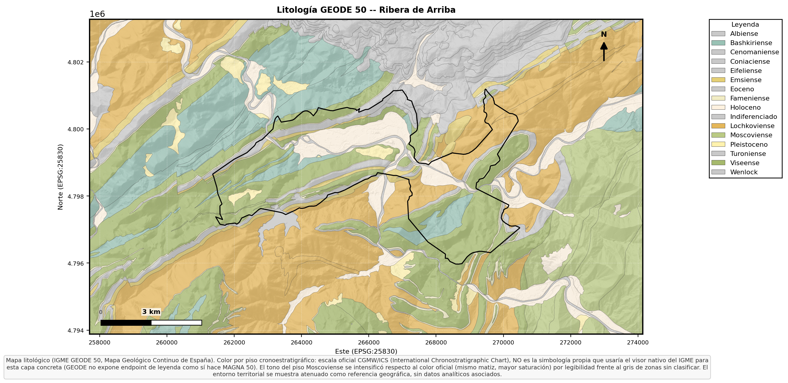
Litología por piso cronoestratigráfico (IGME, GEODE 50).
El mapa de movimientos del terreno del IGME cubre prácticamente todo el concejo con dos fenómenos de escala regional —movimientos verticales sobre materiales carbonatados y movimientos horizontales—, aunque su escala, 1:1.000.000, es demasiado general para localizar el riesgo dentro de una parcela concreta: dice que el fenómeno existe en la zona, no dónde exactamente.
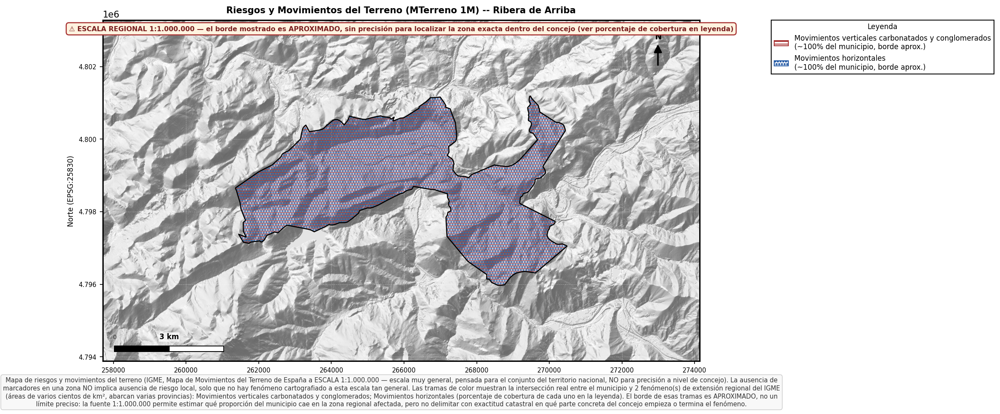
Movimientos del terreno cartografiados a escala regional (IGME, Mapa de Movimientos del Terreno).
Casi dos tercios del concejo, 1.425 de las 2.200 hectáreas, están clasificados como sector primario: uso agrícola, forestal, minero o pesquero. Pero una porción muy notable, 619 hectáreas, figura sin uso o en transición — el primer dato a mirar en cualquier estrategia de recuperación de suelo agrario o forestal. El resto se reparte entre transporte e infraestructuras (108 ha), industria (53 ha), uso residencial (16 ha) y servicios (15 ha).
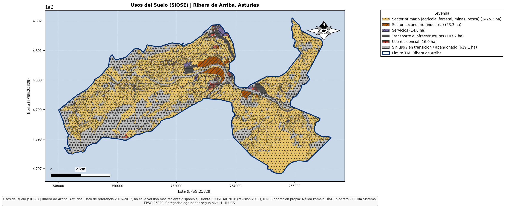
Usos del suelo por categoría (SIOSE AR, revisión 2017).
Crucé las clases agrológicas oficiales —la capacidad real del suelo para el uso agrario— con el uso efectivo detectado, y aparecen dos listas de trabajo complementarias: 686 parches de agricultura activa sobre suelo de máxima limitación, candidatos a reconversión por riesgo de erosión, y 333 parches de buena clase agrológica que hoy no se usan, una oportunidad de recuperación agraria que ni el dato agrológico ni el catastral ofrecen por separado.
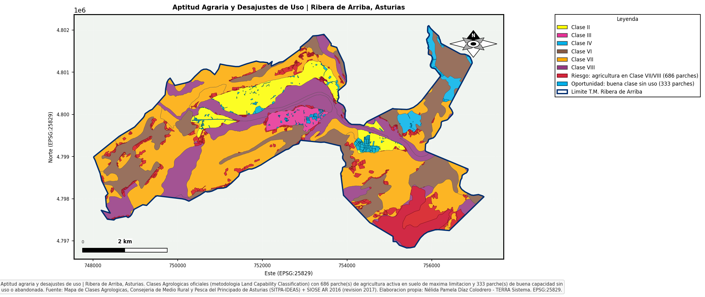
Clases agrológicas oficiales frente a uso real: 686 parches de riesgo, 333 de oportunidad.
Sobre el catastro conté 6.418 parcelas, con un tamaño medio de 3.419 m² y una mediana de apenas 1.166 m²: casi la mitad, el 46%, no llega a las 0,1 hectáreas. Es una estructura de propiedad muy fragmentada, herencia de siglos de reparto agrario, que condiciona cualquier intento de gestión conjunta del territorio.
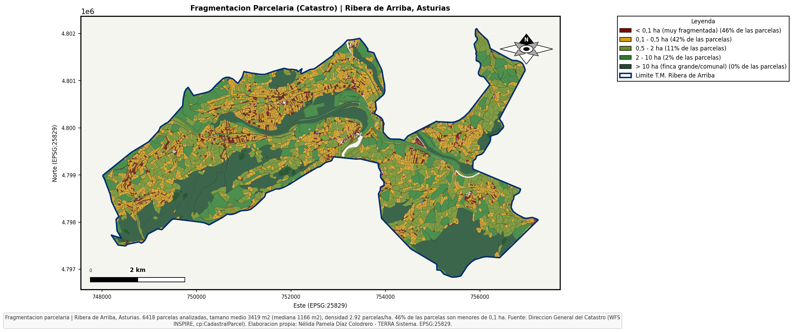
Fragmentación parcelaria: 6.418 parcelas, densidad de 2,92 por hectárea.
La red viaria del concejo combina un tramo de autovía y un corredor ferroviario que cruzan de norte a sur por el este, con carreteras locales y municipales que reparten el tráfico interno, y una malla amplia de caminos y sendas —271 y 227 tramos respectivamente— que sostiene la movilidad rural.
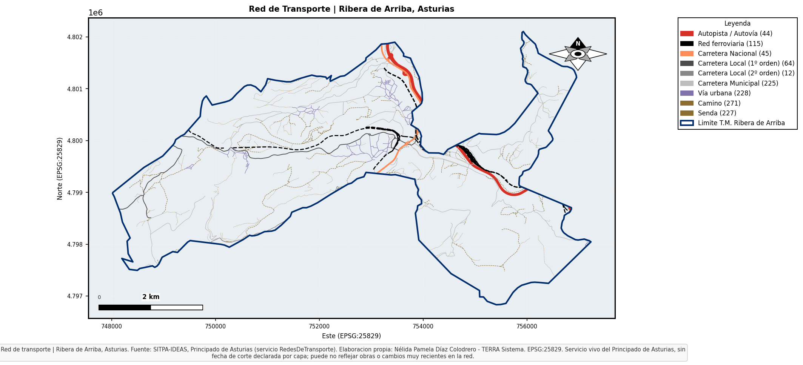
Red de transporte por categoría (SITPA-IDEAS, Principado de Asturias).
La población se concentra en la vega: Soto Ribera, la capital, reúne el núcleo más poblado, y a su alrededor se distribuyen otras veinticinco entidades de población, casi todas de tamaño pequeño y disperso hacia las laderas.
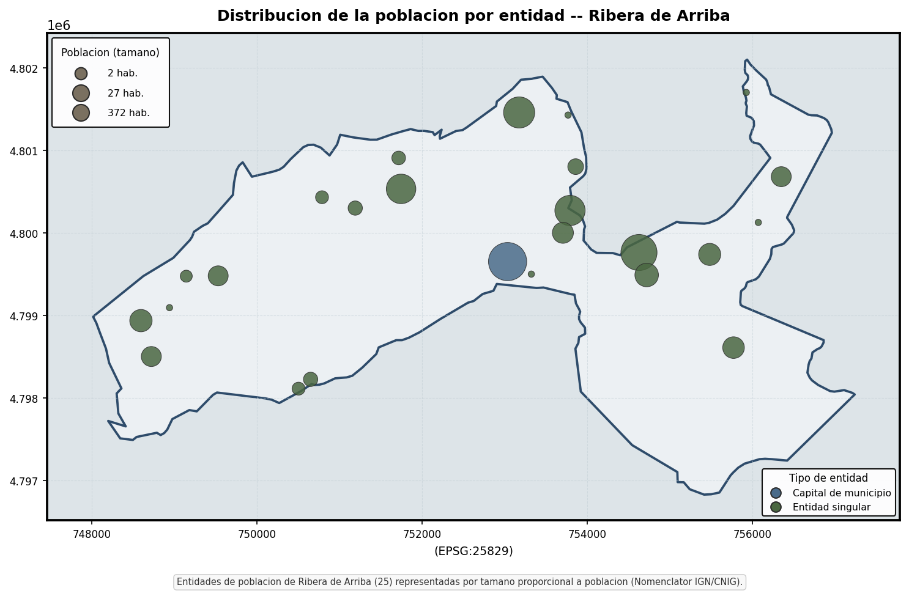
Población por entidad, tamaño proporcional al número de habitantes (Nomenclátor IGN/CNIG).
Calculé isócronas reales de accesibilidad desde Soto Ribera sobre la red viaria oficial, no en línea recta: los núcleos del entorno inmediato quedan a menos de 8 minutos, mientras que los más alejados, hacia los extremos del concejo, superan los 16-20 minutos por carretera.
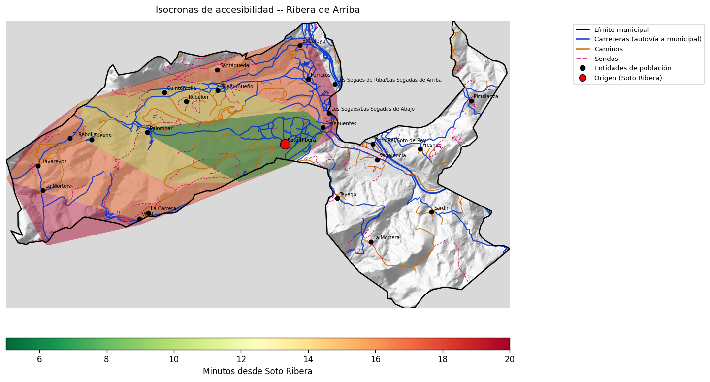
Isócronas de accesibilidad desde Soto Ribera sobre la red viaria real.
Por último, crucé las zonas protegidas —Red Natura 2000, espacios naturales y montes de utilidad pública— con los usos del suelo incompatibles: aparecen 25 parches de transporte, industria o residencial dentro de esas zonas, concentrados sobre todo en un corredor concreto del centro del concejo.
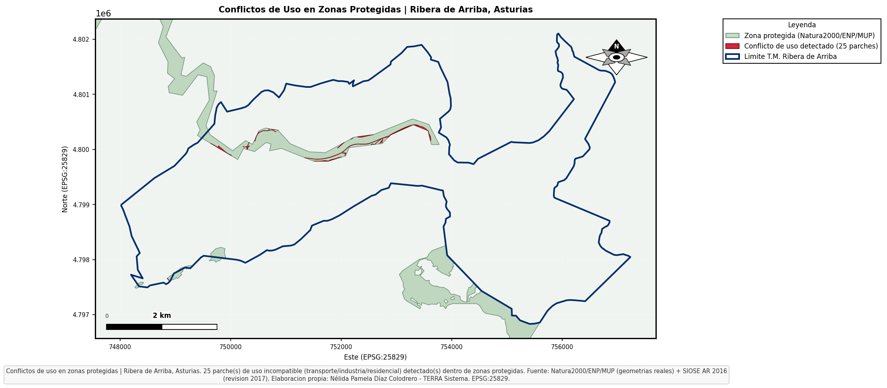
25 parches de uso incompatible detectados dentro de zonas protegidas.
Para medir el cambio real sobre el terreno comparé dos fechas de imágenes Sentinel-2, 2018 y 2026, con cuatro índices espectrales: vegetación (NDVI), humedad (NDWI), suelo construido (NDBI) y severidad de quemas (NBR). En cada caso, un cambio se cuenta como pérdida o ganancia solo si supera un umbral de ±0,15; todo lo que queda dentro de ese margen se considera estable.
La vegetación retrocedió en el 19,1% del territorio —420,9 hectáreas— y solo se regeneró en el 1,7%, 37,6 hectáreas; el 79,2% restante se mantuvo estable. Es un balance claramente negativo, con la pérdida concentrada en la vega y en las laderas más cercanas a los núcleos habitados.
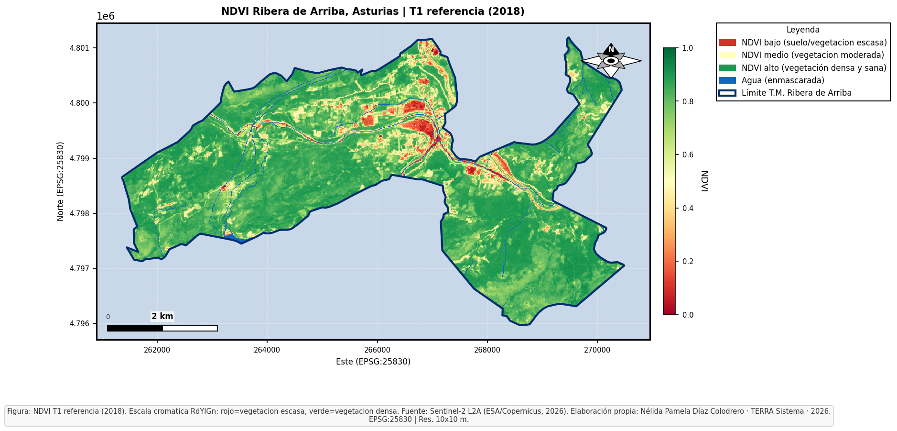
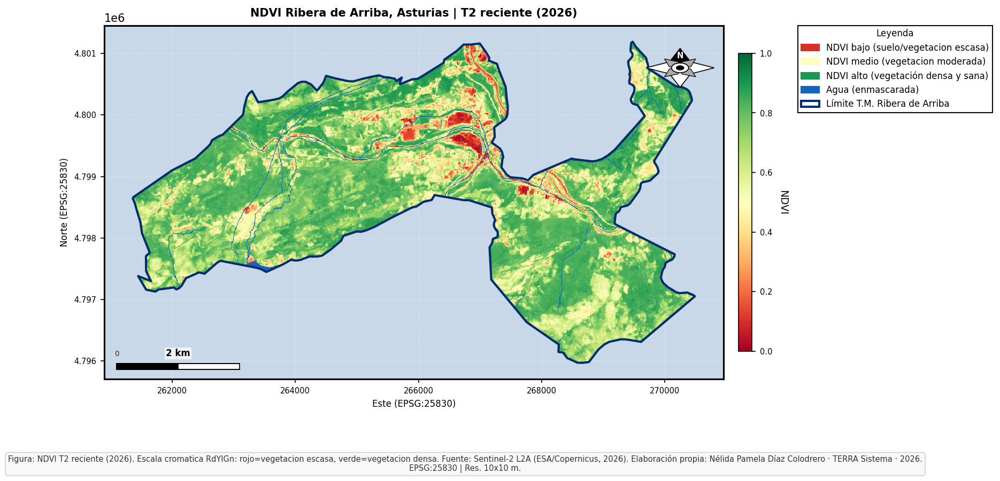
NDVI en 2018 y en 2026, lado a lado.
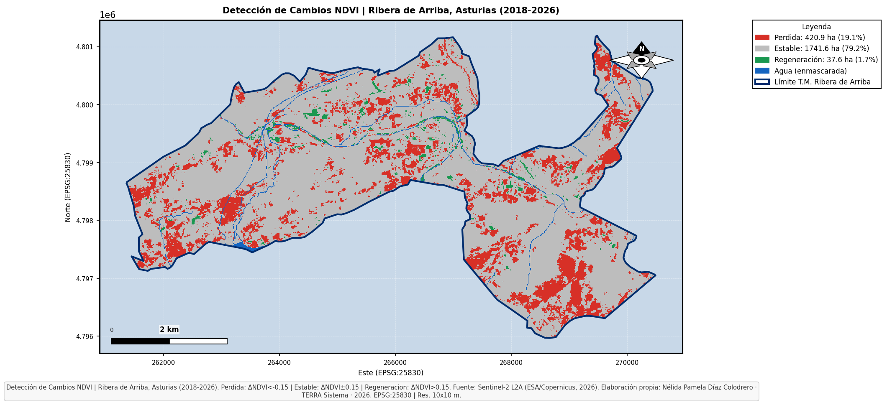
Pérdida (roja), estabilidad y regeneración (verde) de NDVI, 2018-2026.
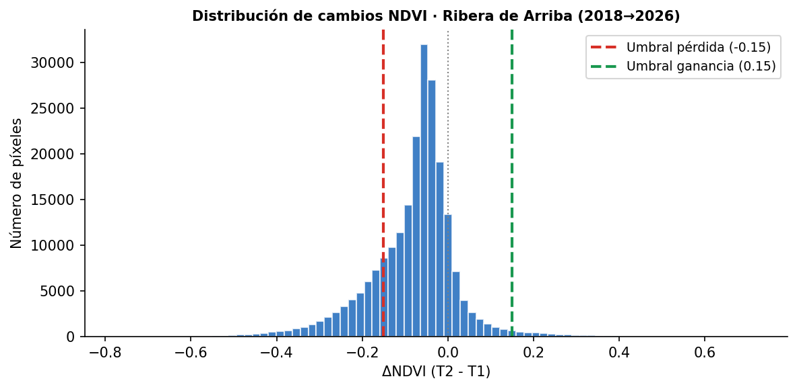
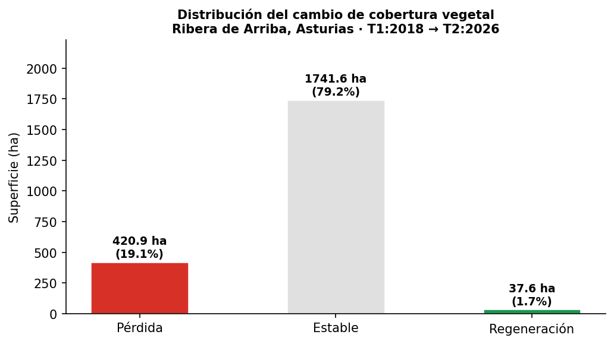
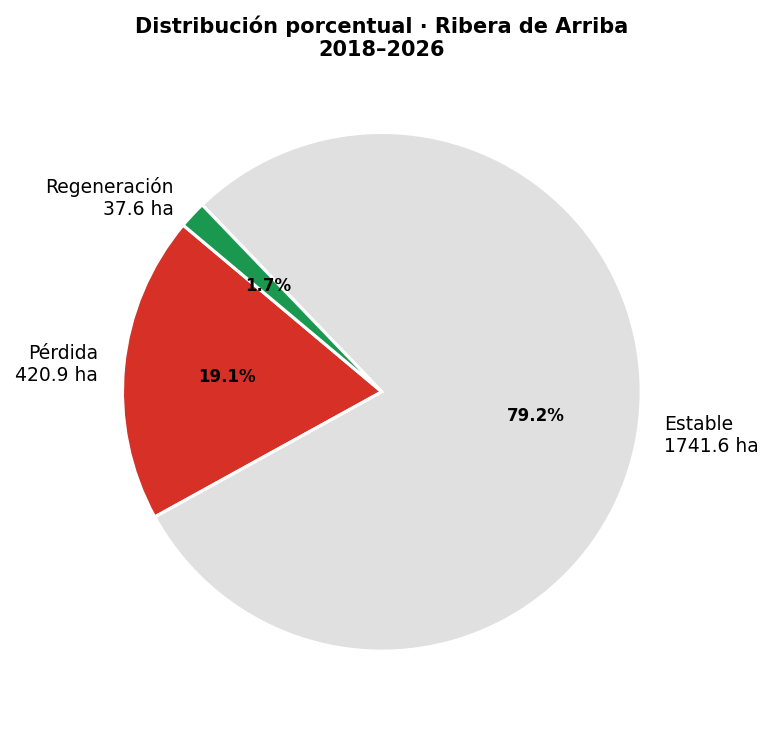
Misma cifra, tres lecturas: distribución de píxeles, superficie por categoría y reparto porcentual.
El agua superficial se mantuvo casi sin cambios: el 92,6% del territorio permaneció estable, con una ganancia de humedad del 6,5% —143,6 hectáreas— frente a una pérdida marginal del 0,9%. Las líneas rojas que sí aparecen siguen de cerca el trazado del río principal.
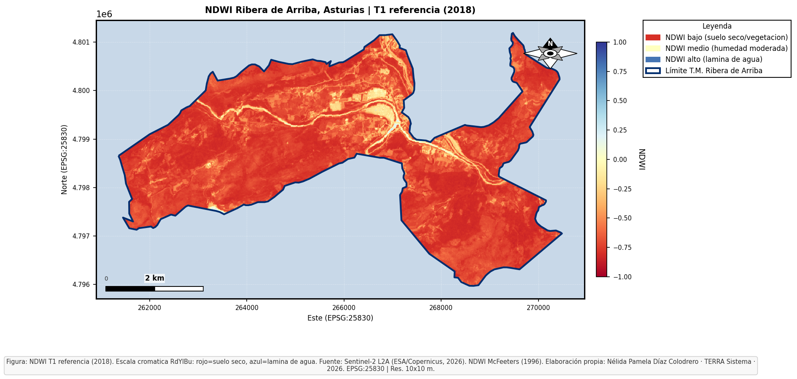
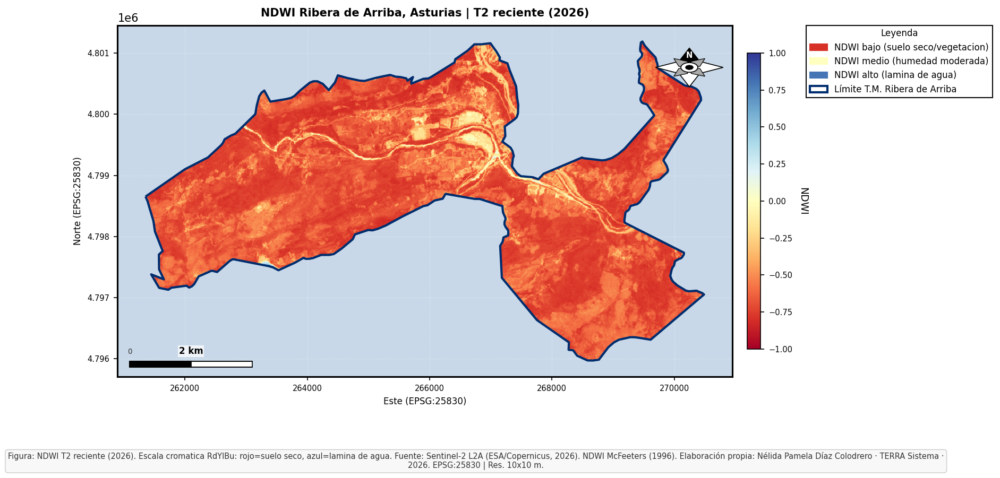
NDWI en 2018 y en 2026.
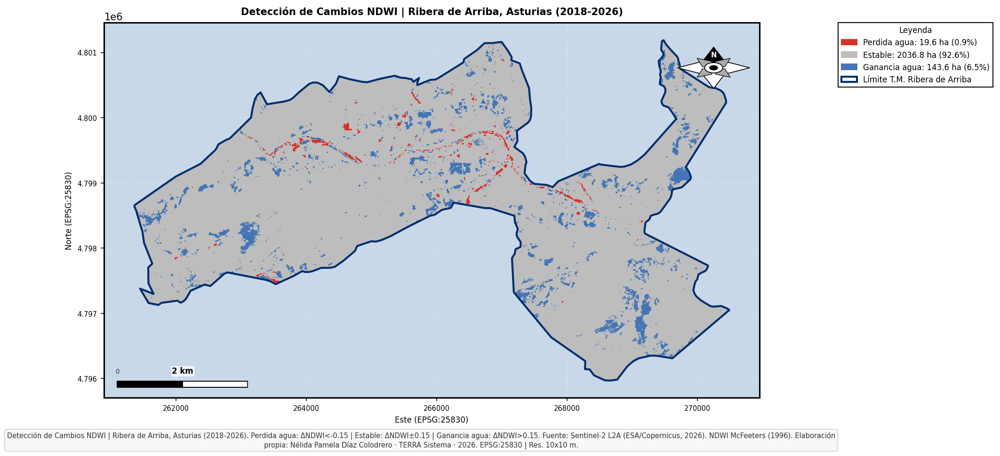
Cambios de humedad 2018-2026: 92,6% estable, 6,5% de ganancia.
El suelo construido creció el 20,8% del territorio —455 hectáreas— frente a una pérdida de apenas el 1,5%. Es el índice con el cambio más marcado de los cuatro, y su patrón coincide con el crecimiento de los núcleos a lo largo de los ejes viarios.
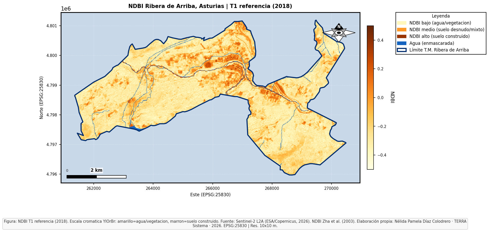
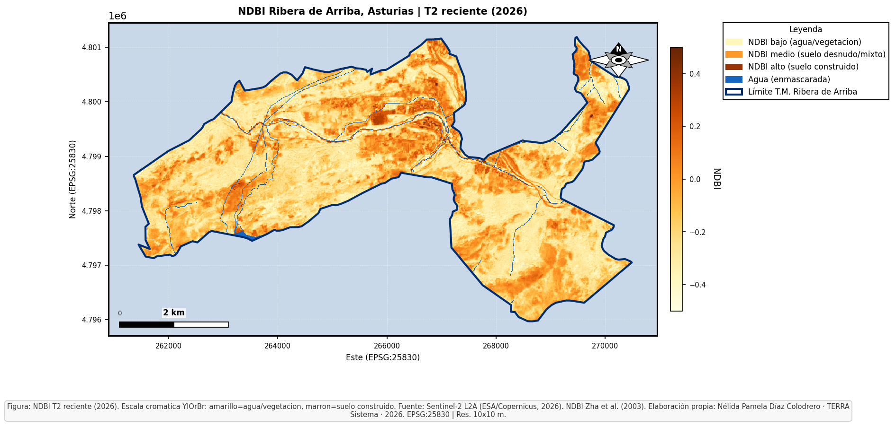
NDBI en 2018 y en 2026.
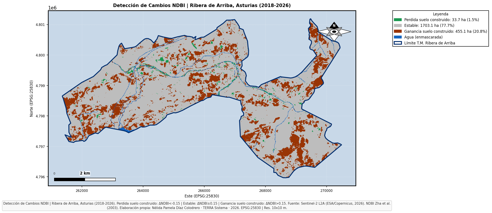
Ganancia de suelo construido, 2018-2026: 20,8% del territorio.
La pérdida de vegetación leñosa o señal de quema afectó al 24,7% del territorio —542 hectáreas—, con una recuperación de solo el 1,8%. Es el índice con la pérdida más extensa de los cuatro, coherente con el retroceso que ya mostraba el NDVI.
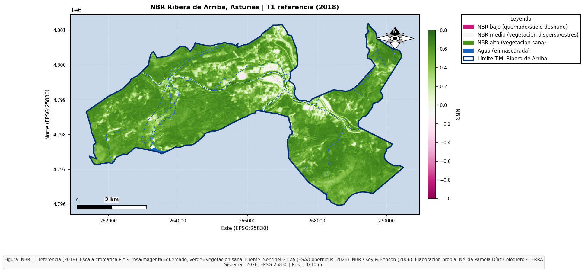
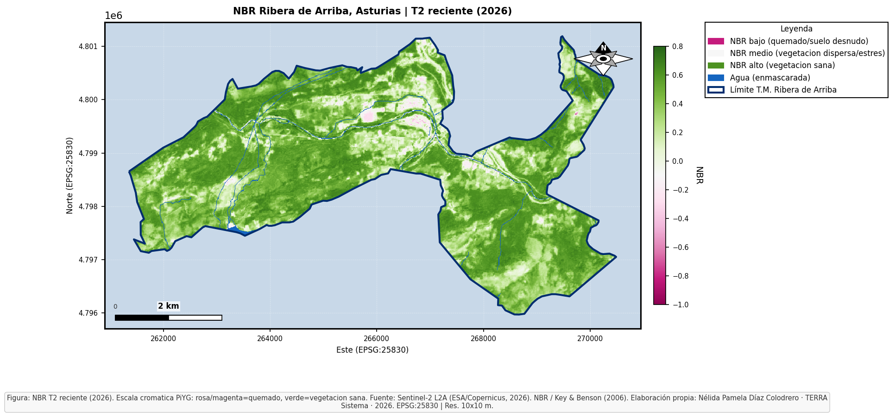
NBR en 2018 y en 2026.
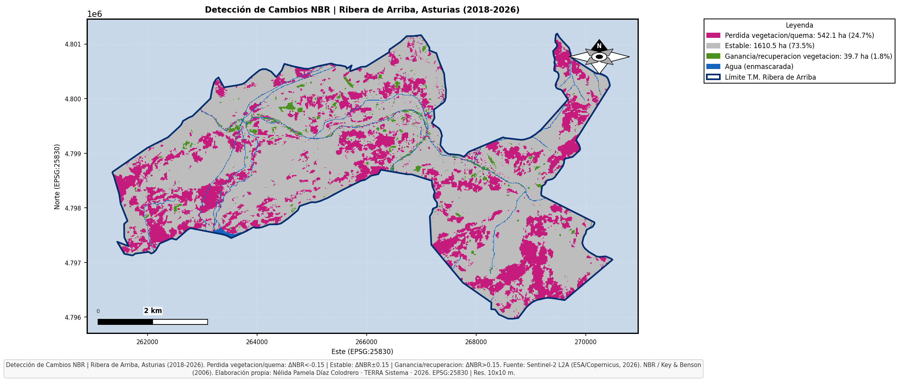
Pérdida de vegetación/quema, 2018-2026: 24,7% del territorio.
Superpuse los cuatro índices para ver dónde coinciden varias señales de cambio a la vez. En el 78,5% del territorio no coincide ninguna; en el 15,8% coinciden tres de las seis combinaciones evaluadas. Son las zonas donde el cambio no es un artefacto de un solo índice, sino una transformación real y sostenida del terreno.
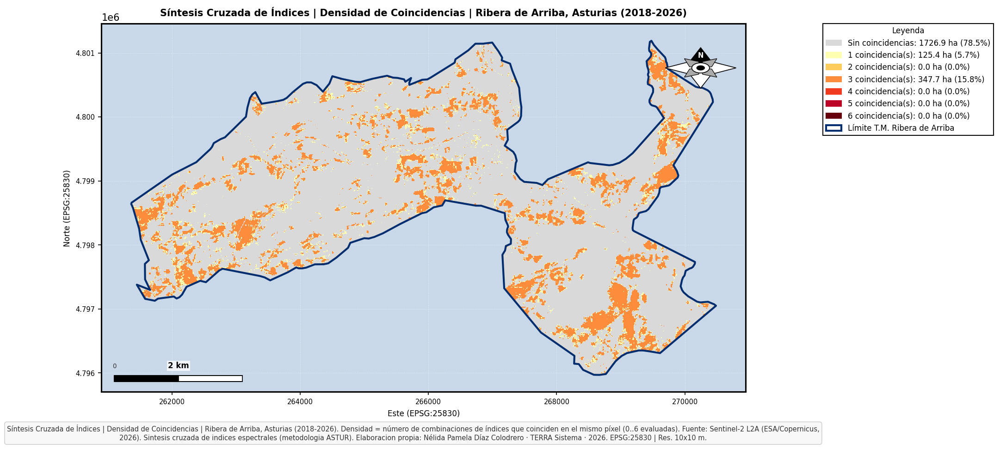
Densidad de coincidencias entre los seis cruces posibles de los cuatro índices.
A partir de la regeneración y la pérdida de NDVI observadas, construí tres lecturas cualitativas del futuro del territorio: no son modelos predictivos numéricos, sino tres formas de proyectar la misma tendencia observada bajo hipótesis distintas.
El escenario óptimo toma la infraestructura verde ya existente —el patrimonio natural protegido— como base para una intervención planificada de recuperación.
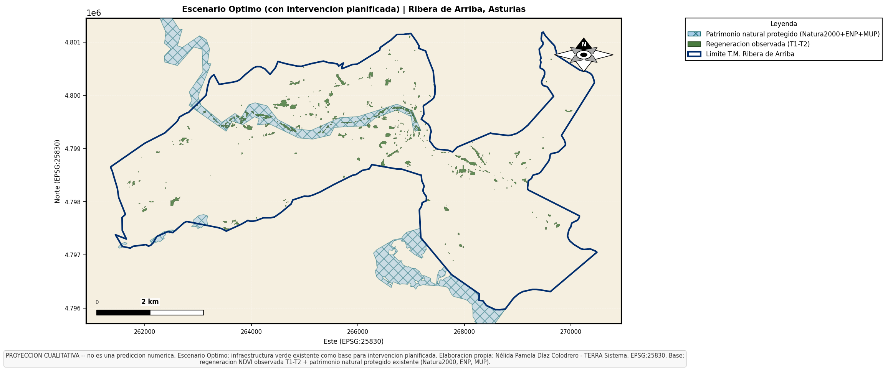
Escenario óptimo: regeneración observada sobre la base del patrimonio natural protegido.
El escenario tendencial supone que la dinámica actual continúa sin ninguna intervención, con un halo de expansión potencial de 75 metros alrededor de cada foco de pérdida ya detectado.
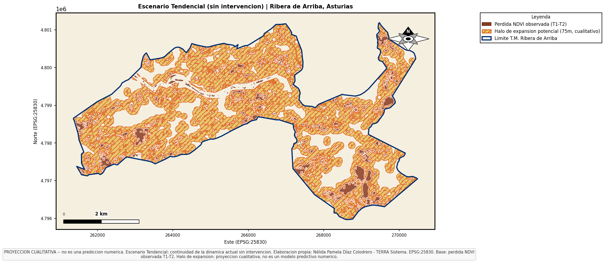
Escenario tendencial: continuidad de la pérdida de NDVI observada, sin intervención.
El escenario de riesgo agrava esa misma carga de combustible vegetal allí donde queda a menos de 500 metros de un núcleo de población, el punto donde una perturbación extrema tendría consecuencias directas sobre las personas.
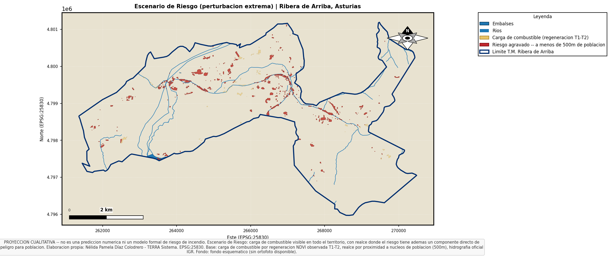
Escenario de riesgo: carga de combustible agravada cerca de la población.
El diagnóstico de Ribera de Arriba deja un balance con dos caras claramente diferenciadas. Por un lado, el territorio pierde: casi una cuarta parte de la superficie muestra señal de pérdida de vegetación leñosa entre 2018 y 2026, con un avance paralelo del suelo construido concentrado en torno a los ejes viarios y los núcleos habitados. Por otro, ese mismo diagnóstico señala dónde está el margen de maniobra: 333 parches de buena aptitud agrológica hoy sin uso, y una infraestructura verde protegida que puede servir de base real, no solo simbólica, para cualquier estrategia de recuperación.
La fragmentación parcelaria (más de 6.400 parcelas, casi la mitad por debajo de 0,1 hectáreas) y los 25 focos de uso incompatible detectados dentro de zonas protegidas marcan los puntos donde la planificación tiene trabajo pendiente: no como advertencia genérica, sino como localización concreta, verificable capa a capa. La síntesis cruzada de los cuatro índices espectrales confirma que el cambio más relevante no está disperso, sino concentrado en un corredor identificable del concejo, lo que convierte esta lectura en una herramienta de priorización y no solo de constatación.
En conjunto, el concejo conserva una base territorial con margen de recuperación real si se actúa sobre las zonas ya señaladas, antes de que la tendencia observada entre 2018 y 2026 se consolide.
Este conjunto de mapas y datos no es un punto final, sino la base de trabajo: a partir de él, TERRA SISTEMA construye el análisis DAFO y CAME del concejo y un informe técnico en PDF centrado en las necesidades reales del territorio y en las líneas de actuación prioritarias que se derivan del diagnóstico. Todo el proceso está supervisado por mí, graduada en Historia por la Universidad de Oviedo y Máster en Recursos Territoriales y Estrategias de Ordenación (Universidad de Oviedo / Universidad de Cantabria), lo que garantiza que cada resultado se contrasta con criterio experto antes de llegar al informe final.
Este diagnóstico se ha elaborado con TERRA SISTEMA, una herramienta propia que puede aplicarse a cualquier municipio de España a partir de sus fuentes oficiales de datos geoespaciales. Si te interesa un análisis similar para tu concejo o quieres hablar sobre cómo puede encajar en tu proyecto, escríbeme.
📧 npameladiazcolodrero@gmail.com
📞 +34 603 852 497